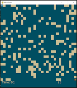
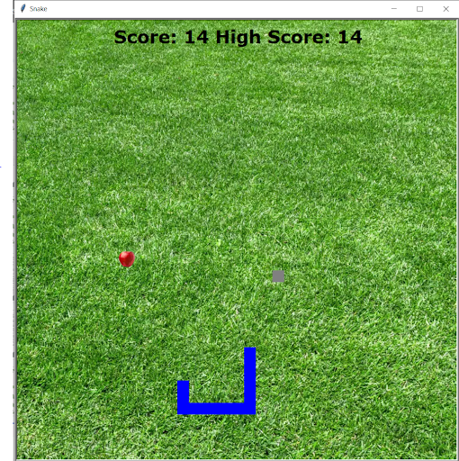
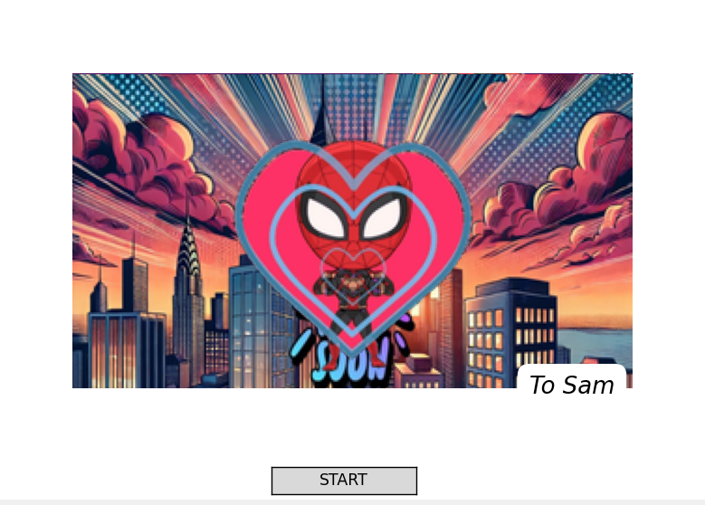
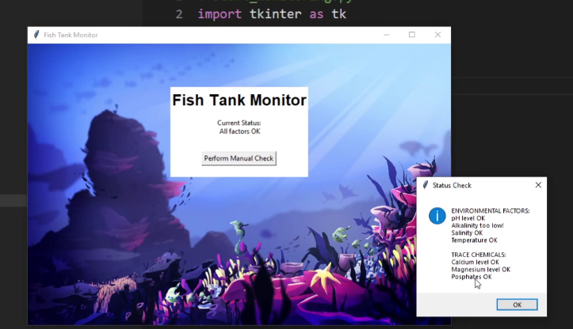

This is my Portfolio Page!
1.1.9 Project: Fish maze.
1.2.5 Project: Snake game.
In our game, you will move the snake, which can be any color you choose before the game starts. To achieve a higher score, you will need to feed the snake apples. The more apples the snake eats, the longer it becomes. Have fun trying to reach the highest score!
1.3.1 Project: spiderman ecard.
We designed an electronic card for kids in a hospital. User input is incorporated, there is color and movement, lists and iteration are used to manipulate the GIF frames, and conditional behavior is present in the form of movement and message display.
Project 2.1.6: A pHishy Fish Tank
This project focused on securing an internet-connected fish tank monitoring system to protect it from cyber threats. We analyzed potential vulnerabilities, applied security fixes, and implemented measures to ensure the fish tank remains safe from unauthorized access and system breaches.
Scratch Project

In our Scratch game you can move the character side to side to dodge the falling salads. Every time the salad falls your score increases by 1. But if you are hit by the salad you can say goodbye to the wonderful candy land and continue dieting in hell!